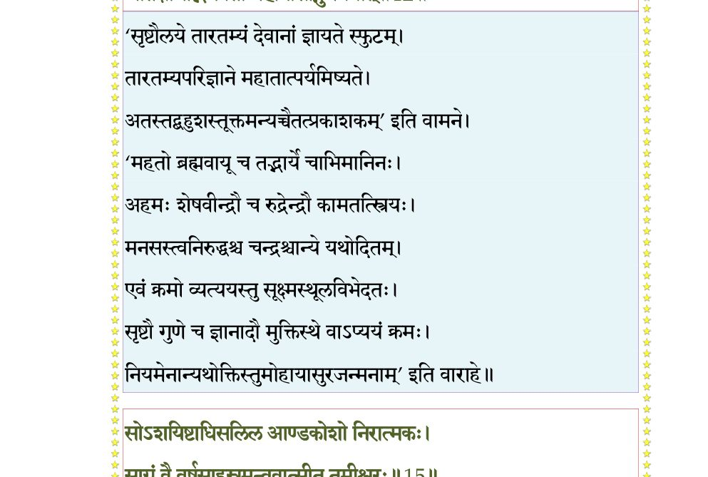
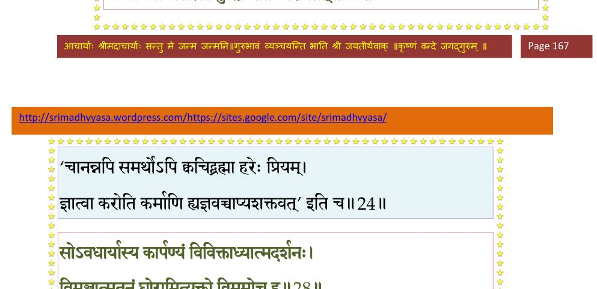
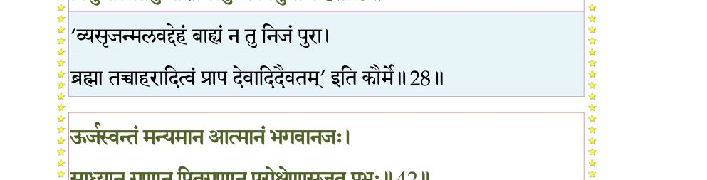
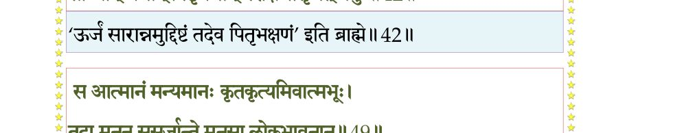
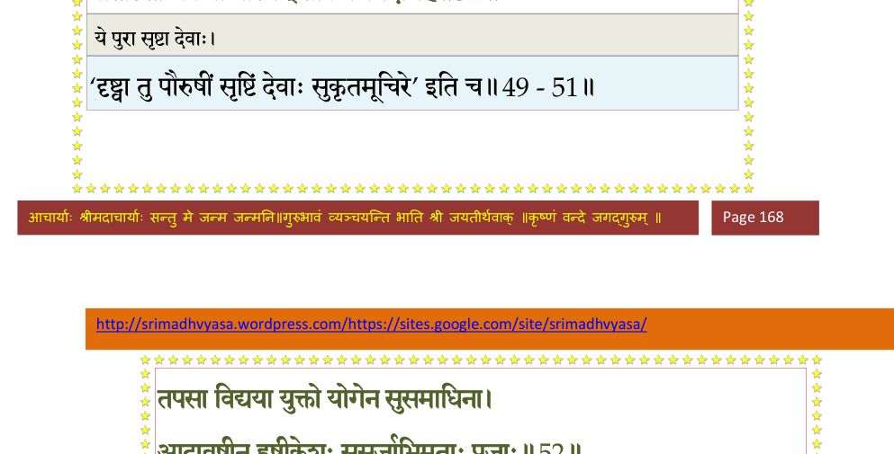
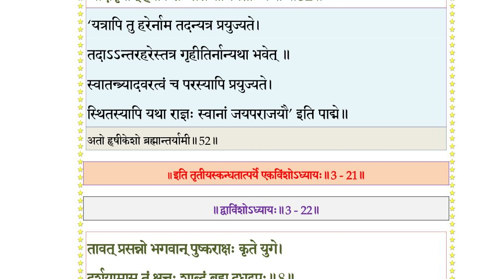

स्कन्ध 3 · अध्याय 21
श्लोक १
राजोवाच–
महीं प््रातिष्ठामध्यास्य योऽसौ स्वायम्भुवो मनुः ।
कान्यध्यतिष्ठद् द्वाराणि मार्गायावरजन्मनाम्।। १ ।।
महीं प््रातिष्ठामध्यास्य योऽसौ स्वायम्भुवो मनुः ।
कान्यध्यतिष्ठद् द्वाराणि मार्गायावरजन्मनाम्।। १ ।।
श्लोक २
क्षत्ता महाभागवतः कृष्णस्यैकान्तिकः सुहृत् ।
यस्तत्याजाग्रजं कृष्णो सापत्यमघवानिति।। २ ।।
यस्तत्याजाग्रजं कृष्णो सापत्यमघवानिति।। २ ।।
श्लोक ३
द्वैपायनादनवरो महित्वे तस्य देहजः ।
सर्वात्मना श्रितः कृष्णं तत्परान् वाऽप्यनुव्रतः।। ३ ।।
सर्वात्मना श्रितः कृष्णं तत्परान् वाऽप्यनुव्रतः।। ३ ।।
श्लोक ४
किमन्वपृच्छन्मैत्रेयं विरजास्तीर्थसेवया ।
उपगम्य कुशावर्त आसीनं तत्त्ववित्तमम्।। ४ ।।
उपगम्य कुशावर्त आसीनं तत्त्ववित्तमम्।। ४ ।।
श्लोक ५
तयोः संवदतोः सूत प््रावृत्ता ह्यमलाः कथाः ।
आपो गाङ्ग्य इवाघघ््नयो हरेः पादाम्बुजाश्रयाः।। ५ ।।
आपो गाङ्ग्य इवाघघ््नयो हरेः पादाम्बुजाश्रयाः।। ५ ।।
श्लोक ६
ता नः कीर्तय भद्रं ते कीर्तन्योदारकर्मणः ।
रसज्ञः को नु तृप्येत हरिलीलामृतं पिबन्।। ६ ।।
रसज्ञः को नु तृप्येत हरिलीलामृतं पिबन्।। ६ ।।
श्लोक ७
सूत उवाच–
एवं परीक्षिता पृष्टो भगवान् बादरायणिः ।
भगवत्यर्पिताध्यात्मस्तमाह श्रूयतामिति।। ७ ।।
एवं परीक्षिता पृष्टो भगवान् बादरायणिः ।
भगवत्यर्पिताध्यात्मस्तमाह श्रूयतामिति।। ७ ।।
श्लोक ८
शुक उवाच–
हरेर्धृतक्रोडतनोः स्वमायया निशम्य गोरुद्धरणं रसातलात् ।
लीलां हिरण्याक्षमवज्ञया हतं सञ्जातहर्षो मुनिमाह भारत।। ८ ।।
हरेर्धृतक्रोडतनोः स्वमायया निशम्य गोरुद्धरणं रसातलात् ।
लीलां हिरण्याक्षमवज्ञया हतं सञ्जातहर्षो मुनिमाह भारत।। ८ ।।
श्लोक ९
विदुर उवाच–
प््राजापतिपतिः सृष्ट्वा प््राजासर्गे प््राजापतीन् ।
किमारभत मे ब्रह्मन् प््राब्रूह्यव्यक्तमार्गवित्।। ९ ।।
प््राजापतिपतिः सृष्ट्वा प््राजासर्गे प््राजापतीन् ।
किमारभत मे ब्रह्मन् प््राब्रूह्यव्यक्तमार्गवित्।। ९ ।।
श्लोक १०
ये मरीच्यादयो विप््र•ः यस्तु स्वायम्भुवो मनुः ।
ते वै ब्रह्मण आदेशात् कथमेतदभावयन्।। १० ।।
ते वै ब्रह्मण आदेशात् कथमेतदभावयन्।। १० ।।
श्लोक ११
स्वद्वितीयाः किमसृजन् स्वतन्त्रा उत कर्मभिः ।
आहोस्वित् संहताः सर्व इदं स्म समकल्पयन्।। ११ ।।
आहोस्वित् संहताः सर्व इदं स्म समकल्पयन्।। ११ ।।
श्लोक १२
मैत्रेय उवाच–
दैवेन दुर्वितर्क्येण परेणानिमिषेण च ।
जातक्षोभाद् भगवतो महानासीद् गुणत्रयात्।। १२ ।।
दैवेन दुर्वितर्क्येण परेणानिमिषेण च ।
जातक्षोभाद् भगवतो महानासीद् गुणत्रयात्।। १२ ।।
भागवततात्पर्यनिर्णय

श्लोक १३
रजःप््राधानान्महतस्त्रिलिङ्गो दैवचोदितात् ।
जातःससर्ज भूतादिर्वियदादीनि पञ्च च (सः)।। १३ ।।
जातःससर्ज भूतादिर्वियदादीनि पञ्च च (सः)।। १३ ।।
श्लोक १४
तानि चैकैकशः स्रष्टुमसमर्थानि भौतिकम् ।
संहत्य दैवयोगेन हैममण्डमवासृजन्।। १४ ।।
संहत्य दैवयोगेन हैममण्डमवासृजन्।। १४ ।।
श्लोक १५
सोऽशयिष्टाधिसलिल आण्डकोशो निरात्मकः ।
साग्रं वै वर्षसाहस्रमन्ववात्सीत् तमीश्वरः।। १५ ।।
साग्रं वै वर्षसाहस्रमन्ववात्सीत् तमीश्वरः।। १५ ।।
भागवततात्पर्यनिर्णय
श्लोक १६
तस्य नाभेरभूत् पद्मं सहस्रार्कोरुदीधिति ।
सर्वजीवनिकायौको यत्र (यतः) स्वयमभूत् स्वराट्।। १६ ।।
सर्वजीवनिकायौको यत्र (यतः) स्वयमभूत् स्वराट्।। १६ ।।
श्लोक १७
सोऽनुविष्टो भगवता यः शेते सलिलाशये ।
लोकसंस्थां यथापूर्वं निर्ममे संस्थया स्वया।। १७ ।।
लोकसंस्थां यथापूर्वं निर्ममे संस्थया स्वया।। १७ ।।
भागवततात्पर्यनिर्णय
श्लोक १८
ससर्ज च्छाययाऽविद्यां पञ्चपर्वाणमग्रतः ।
तामिस्रमन्धतामिस्रं तमो मोहो महातमः (महत्तमः)।। १८ ।।
तामिस्रमन्धतामिस्रं तमो मोहो महातमः (महत्तमः)।। १८ ।।
श्लोक १९
विससर्जात्मनः कायं नाभ्यनन्दत् तमोमयम् ।
जगृहुर्यक्षरक्षांसि रात्रिं क्षुत्तृट्समुद्भवाम्।। १९ ।।
जगृहुर्यक्षरक्षांसि रात्रिं क्षुत्तृट्समुद्भवाम्।। १९ ।।
श्लोक २०
क्षुत्तृड्भ्यामुपसृष्टास्ते तं जग्धुमभिदुद्रुवुः ।
मा रक्षतैनं जक्षध्वमित्युच्चैः क्षुत्तृडर्दिताः।। २० ।।
मा रक्षतैनं जक्षध्वमित्युच्चैः क्षुत्तृडर्दिताः।। २० ।।
श्लोक २१
देवस्तानाह संविग्नो मा मा जक्षत रक्षत ।
अहो मे यक्षरक्षांसि प््राजा यूयं भविष्यथ।। २१ ।।
अहो मे यक्षरक्षांसि प््राजा यूयं भविष्यथ।। २१ ।।
श्लोक २२
देवताः प््राभया या या दिव्याः प््रामुखतोऽसृजत् ।
तेऽहार्षुर्देवयन्तोऽपि विसृष्टां तां प््राभामहः।। २२ ।।
तेऽहार्षुर्देवयन्तोऽपि विसृष्टां तां प््राभामहः।। २२ ।।
श्लोक २३
देवोऽदेवान् जघनतः सृजति स्माति(स्म वि)लोलुपान् ।
त एनं लोलुपतया मैथुनायाभिपेदिरे।। २३ ।।
त एनं लोलुपतया मैथुनायाभिपेदिरे।। २३ ।।
श्लोक २४
ततो हसन् स भगवानसुरैर्निरपत्रपैः ।
अन्वीयमानस्तरसा क्रुद्धो भीतः परापतत्।। २४ ।।
अन्वीयमानस्तरसा क्रुद्धो भीतः परापतत्।। २४ ।।
भागवततात्पर्यनिर्णय

श्लोक २५
स उपव्रज्य वरदं प््रापन्नार्तिहरं हरिम् ।
अनुग्रहाय भक्तानामनुरूपात्मदर्शनम्।। २५ ।।
अनुग्रहाय भक्तानामनुरूपात्मदर्शनम्।। २५ ।।
श्लोक २६
पाहि मां परमात्मंस्ते प््रोषणेनासृजं प््राजाः ।
ता इमा यभितुं पापा उपक्रामन्ति मां प््राभो।। २६ ।।
ता इमा यभितुं पापा उपक्रामन्ति मां प््राभो।। २६ ।।
श्लोक २७
त्वमेकः किल लोकानां क्लिष्टानां क्लेशनाशनः ।
त्वमेकः क्लेशदस्तेषामनासन्नपदां तव।। २७ ।।
त्वमेकः क्लेशदस्तेषामनासन्नपदां तव।। २७ ।।
श्लोक २८
सोऽवधार्यास्य कार्पण्यं विविक्ताध्यात्मदर्शनः ।
विमुञ्चात्मतनुं घोरामित्युक्तो विमुमोच ह।। २८ ।।
विमुञ्चात्मतनुं घोरामित्युक्तो विमुमोच ह।। २८ ।।
भागवततात्पर्यनिर्णय

श्लोक २९
तां क्वणच्चरणाम्भोजां मदविह्वललोचनाम् ।
काञ्चीकलापविलसद्दुकूलच्छन्नरोधसम्।। २९ ।।
काञ्चीकलापविलसद्दुकूलच्छन्नरोधसम्।। २९ ।।
श्लोक ३०
अन्योन्याश्लेषयोत्तुङ्गनिरन्तरपयोधराम् ।
सुनासां सुद्विजां स्निग्धहासलीलावलोकनाम्।। ३० ।।
सुनासां सुद्विजां स्निग्धहासलीलावलोकनाम्।। ३० ।।
श्लोक ३१
गूहन्तीं व्रीडयाऽऽत्मानं नीलालकवरूथिनीम् ।
उपलभ्यासुराः सन्ध्यां सर्वे तां मुमुहुः स्त्रियम्।। ३१ ।।
उपलभ्यासुराः सन्ध्यां सर्वे तां मुमुहुः स्त्रियम्।। ३१ ।।
श्लोक ३२
अहो रूपमहो धैर्यमहो अस्या नवं वयः ।
मध्ये कामयमानानामकामेव विसर्पति।। ३२ ।।
मध्ये कामयमानानामकामेव विसर्पति।। ३२ ।।
श्लोक ३३
वितर्कयन्तो बहुधा तां सन्ध्यां प््रामदायतीम् ।
अभिसम्भाव्य विस्रम्भात् पर्यपृच्छन् कुमेधसः।। ३३ ।।
अभिसम्भाव्य विस्रम्भात् पर्यपृच्छन् कुमेधसः।। ३३ ।।
श्लोक ३४
काऽसि कस्यासि रम्भोरु को वाऽर्थस्तेऽत्र भामिनि ।
रूपद्रविणपण्येन दुर्भगान् नो विबाधसे।। ३४ ।।
रूपद्रविणपण्येन दुर्भगान् नो विबाधसे।। ३४ ।।
श्लोक ३५
या वा काऽसि त्वमबले दिष्ट्या सन्दर्शनं तव ।
उद्धुनोषीक्षमाणानां कन्दुकक्रीडया मनः।। ३५ ।।
उद्धुनोषीक्षमाणानां कन्दुकक्रीडया मनः।। ३५ ।।
श्लोक ३६
नैकत्र ते जयति शालिनि पादपद्मं
घ्नन्त्या मुहुः करतलेन पतत्पतङ्गम् ।
मध्यं विषीदति बृहत्स्तनभारभीतं
श्रान्ता च दृष्टिरमलः सुजटावरूथः।। ३६ ।।
घ्नन्त्या मुहुः करतलेन पतत्पतङ्गम् ।
मध्यं विषीदति बृहत्स्तनभारभीतं
श्रान्ता च दृष्टिरमलः सुजटावरूथः।। ३६ ।।
श्लोक ३७
इति सायन्तनीं सन्ध्यामसुराः प््रामदायतीम् ।
प््रालोभयन्तीं जगृहुर्मत्वा मूढधियः स्त्रियम्।। ३७ ।।
प््रालोभयन्तीं जगृहुर्मत्वा मूढधियः स्त्रियम्।। ३७ ।।
श्लोक ३८
प््राहस्य भावगम्भीरं जिघ्रन्त्यात्मानमात्मना ।
कान्त्या ससर्ज भगवान् गन्धर्वाप्सरसां गणान्।। ३८ ।।
कान्त्या ससर्ज भगवान् गन्धर्वाप्सरसां गणान्।। ३८ ।।
श्लोक ३९
विससर्ज तनुं तां वै ज्योत्स्नां कान्तिमतीं प््रिायाम् ।
तामेव चा ददुः प््राीत्या विश्वावसुपुरोगमाः।। ३९ ।।
तामेव चा ददुः प््राीत्या विश्वावसुपुरोगमाः।। ३९ ।।
श्लोक ४०
सृष्ट्वा भूतपिशाचांश्च भगवानात्मतन्द्रिणा ।
दिग्वाससो मुक्तकेशान् वीक्ष्य चामीलयद् दृशौ।। ४० ।।
दिग्वाससो मुक्तकेशान् वीक्ष्य चामीलयद् दृशौ।। ४० ।।
श्लोक ४१
जगृहुस्तद्विसृष्टां तां जृम्भणाख्यां तनुं प््राभोः ।
निद्रादीन्द्रियविक्लेदो यया भूतेषु दृश्यते ।
तयोच्छिष्टान् धर्षयन्ति तमुन्मादं प््राचक्षते।। ४१ ।।
निद्रादीन्द्रियविक्लेदो यया भूतेषु दृश्यते ।
तयोच्छिष्टान् धर्षयन्ति तमुन्मादं प््राचक्षते।। ४१ ।।
श्लोक ४२
ऊर्जस्वन्तं मन्यमान आत्मानं भगवानजः ।
साध्यान् गणान् पितृगणान् परोक्षेणासृजत् प््राभुः।। ४२ ।।
साध्यान् गणान् पितृगणान् परोक्षेणासृजत् प््राभुः।। ४२ ।।
भागवततात्पर्यनिर्णय

श्लोक ४३
त आत्मसर्गं तं कायं पितरः प््रातिपेदिरे ।
साध्येभ्यश्च पितृभ्यश्च कवयो यद् वितन्वते।। ४३ ।।
साध्येभ्यश्च पितृभ्यश्च कवयो यद् वितन्वते।। ४३ ।।
श्लोक ४४
सिद्धान् विद्याधरांश्चैव तिरोधानेन सोऽसृजत् ।
तेभ्यो ददौ तमात्मानमन्तर्धानाख्यमद्भुतम्।। ४४ ।।
तेभ्यो ददौ तमात्मानमन्तर्धानाख्यमद्भुतम्।। ४४ ।।
श्लोक ४५
स किन्नरान् किंपुरुषानात्मना चासृजत् प््राभुः ।
मानयन्नात्मनाऽऽत्मानमात्माभासं विलोकयन्।। ४५ ।।
मानयन्नात्मनाऽऽत्मानमात्माभासं विलोकयन्।। ४५ ।।
श्लोक ४६
ते तु तज्जगृहू रूपं त्यक्तं यत् परमेष्ठिना ।
मिथुनीभूय गायन्तस्तमेवोषसि कर्मभिः।। ४६ ।।
मिथुनीभूय गायन्तस्तमेवोषसि कर्मभिः।। ४६ ।।
श्लोक ४७
देहेन वै भोगवता शयानो बहुचिन्तया ।
सर्गेऽनुपचिते क्रोधादुत्ससर्ज हि तद् वपुः।। ४७ ।।
सर्गेऽनुपचिते क्रोधादुत्ससर्ज हि तद् वपुः।। ४७ ।।
श्लोक ४८
येऽहीयन्तामुतः केशा अहयस्तेङ्ग जज्ञिरे ।
सर्पा विसर्पतः क्रूरा नागा भोगोरुकन्धराः।। ४८ ।।
सर्पा विसर्पतः क्रूरा नागा भोगोरुकन्धराः।। ४८ ।।
श्लोक ४९
स आत्मानं मन्यमानः कृतकृत्यमिवात्मभूः ।
तदा मनून् ससर्जान्ते मनसा लोकभावनान्।। ४९ ।।
तदा मनून् ससर्जान्ते मनसा लोकभावनान्।। ४९ ।।
भागवततात्पर्यनिर्णय
श्लोक ५०
तेभ्यः स व्यसृजद् देहं परः पुरुष आत्मनः ।
तां दृष्ट्वा ये पुरा सृष्टाः प््राशशंसुः प््राजापतिम्।। ५० ।।
तां दृष्ट्वा ये पुरा सृष्टाः प््राशशंसुः प््राजापतिम्।। ५० ।।
भागवततात्पर्यनिर्णय
श्लोक ५१
अहो एतज्जगत्स्रष्टः सुकृतं बत ते कृतम् ।
प््रातिष्ठिताः क्रिया यस्मिन् साकमन्नमदामहे।। ५१ ।।
प््रातिष्ठिताः क्रिया यस्मिन् साकमन्नमदामहे।। ५१ ।।
भागवततात्पर्यनिर्णय

श्लोक ५२
तपसा विद्यया युक्तो योगेन सुसमाधिना ।
आदावृषीन् हृषीकेशः ससर्जाभिमताः प््राजाः।। ५२ ।।
आदावृषीन् हृषीकेशः ससर्जाभिमताः प््राजाः।। ५२ ।।
भागवततात्पर्यनिर्णय

श्लोक ५३
तेभ्यश्चैकैकशस्तस्य देहस्यांशमदादजः ।
यत् तत् समाधियोगर्धितपोविद्याविरक्तिमत्।। ५३ ।।
यत् तत् समाधियोगर्धितपोविद्याविरक्तिमत्।। ५३ ।।
।। इति श्रीमद्भागवते तृतीयस्कन्धे एकविंशोऽध्यायः ।।